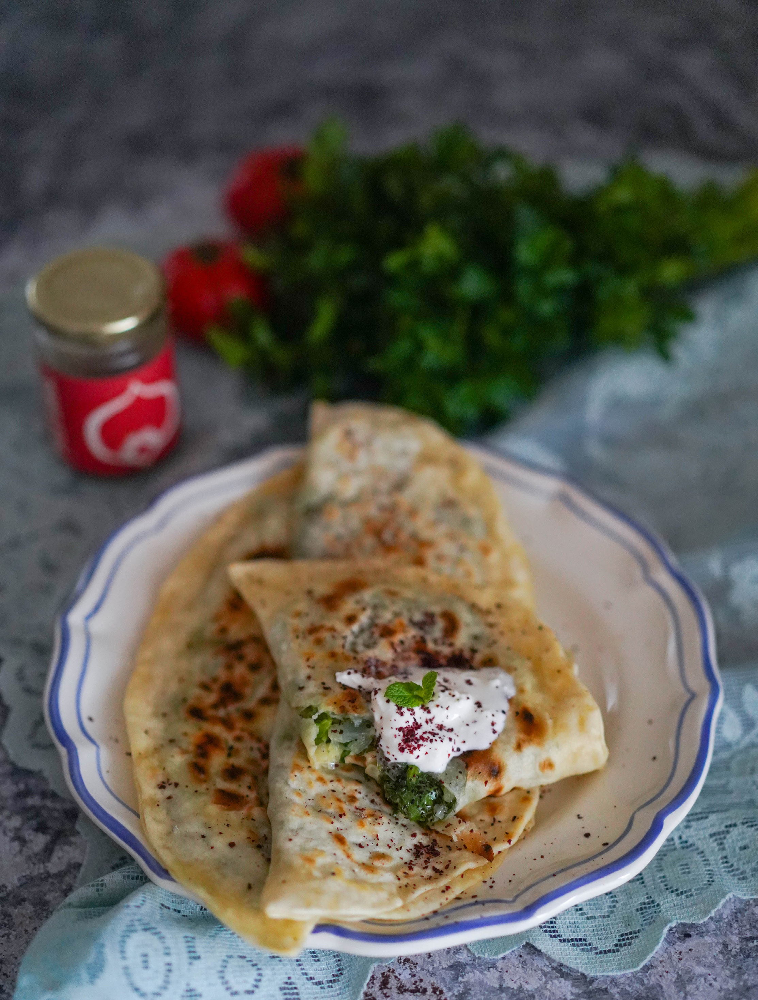

Азербайджанские лепёшки из пресного теста с множеством вариантов начинки: • картофель с жареным луком, • картофель с сыром, • картофель с луком и грибами, • мясо с зеленью, • творог и солёный сыр с зеленью, • творог с жареным луком, • сыр с помидорами, зеленью и чесноком, • тыква с жареным луком, сыром и зеленью, • тыква сладкая. И это ещё не полный список. Такое разнообразие начинок связано с тем, что кутабы очень популярны на Кавказе повсеместно, и везде их готовят по-своему. Теста берётся совсем немного, кусочек чуть больше грецкого ореха, и раскатывается оно очень тонко, почти до прозрачности. Внутрь кладётся начинка в соотношении 1:1 к тесту. Для начинки с зеленью лучше ориентироваться на объём, а не на вес. Можно использовать как любые огородные травы в любимом сочетании, так и весеннюю зелень: молодую крапиву, сныть. В Армении в начинку с зеленью ещё добавляют растительное масло (мы предпочитаем оливковое) или натирают холодное сливочное. Подготовленные кутабы пекут на садже (особой сковородке с дном округлой формы) или обычной сухой разогретой сковородке, затем смазывают сливочным или топлёным маслом, выкладывают стопкой и накрывают — под крышкой они становятся нежнее и пропитываются маслом. Перед подачей кутабы можно посыпать сумахом или зёрнами граната, особенно те, что с мясной начинкой. Кутабы лучше подавать горячими, из расчёта на человека по 5–7 штук с начинкой из зелени или по 3–5 с сырной или мясной начинкой, так как они сытнее. Обычно их едят руками, дополнительно к кутабам можно подать овощи, зелень, томатный или перечный соус, сметану, мацони или йогурт с чесноком и зеленью.